Реализация подчиненных форм
Теоретическая часть
Цель работы: Приобретение практических навыков создания и использования подчиненных форм в Microsoft Access для организации работы со связанными данными из разных таблиц в едином интерфейсе.
Подчиненная форма в MS Access представляет собой форму, встроенную в другую форму (главную форму), и используется для отображения данных из связанной таблицы или запроса, находящихся на стороне «многие» в отношении «один-ко-многим». Подчиненные формы позволяют одновременно просматривать и редактировать данные из двух связанных источников без создания сложных многотабличных запросов.
Основные свойства и элементы настройки:
— Свойство «Объект-источник» – определяет, какая форма или таблица будет выступать в качестве подчиненной.
— Свойства «Связывание главных полей» – устанавливают связь между главной и подчиненной формами по ключевым полям (автоматически или вручную).
— Свойство «Допустимые добавления» – разрешает или запрещает добавление новых записей через подчиненную форму.
Применение подчиненных форм:
— Отображение списка товаров в конкретном заказе (главная форма – «Заказы», подчиненная – «Товары в заказе»).
— Ввод и редактирование информации о сотрудниках и их проектах одновременно.
— Создание интерфейсов для работы с иерархическими данными (категории – подкатегории – товары).
— Реализация каскадного редактирования связанных сущностей без переключения между формами.
Практическая часть
1. Запустите MS Access и откройте базу данных
2. Создать подчиненную форму из двух таблиц можно с помощью «Мастера форм». Для этого переходим на вкладку «Создание» и на вкладке «Форма» выбираем «Мастер форм»
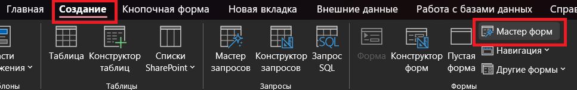
3. У нас откроется окно «Создание форм». Далее мы должны выбрать те таблицы, на основе которых мы будем создавать подчиненную форму. За основу берем таблицу «Организации» и «Водители»
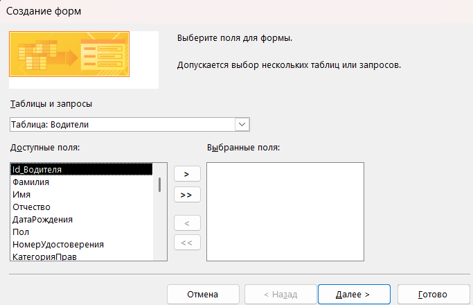
4. В выпадающем списке выбираем таблицу «Организации» и переносим поля «Название», «Тип», «ИНН», «Юридический адрес» и «Фактический адрес»
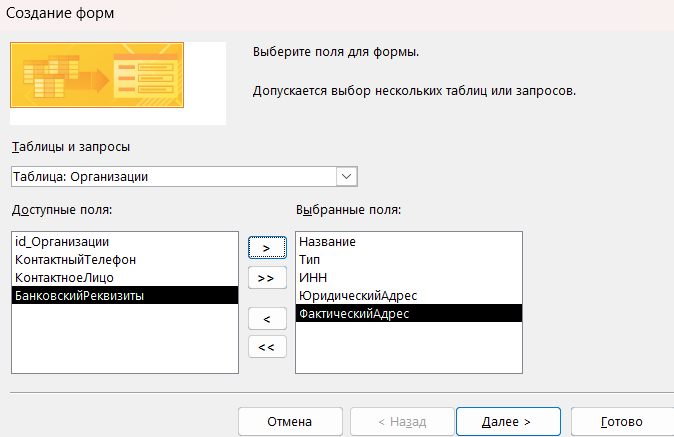
5. В этом же окне мы выбираем таблицу «Водители»
6. Переносим из этой таблицы следующие поля: Фамилия, Имя, Отчество, Дата рождения, Пол
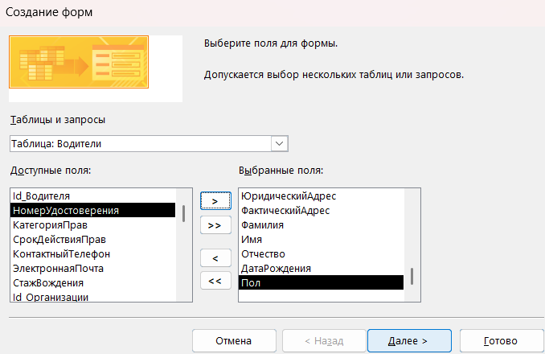
7. Нажимаем на кнопку «Далее» и у нас открывается форма для редактирования отображения на форме полей, которые мы выбирали до этого
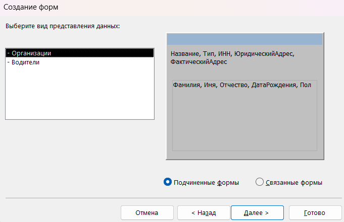
8. По умолчанию «Мастер форм» автоматически распределяет поля из таблиц, а также автоматически отмечено «Подчиненные формы».
9. Нажимаем на кнопку «Далее» и выбираем внешний вид «табличный»
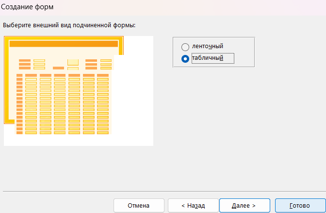
10. Нажимаем на кнопку «Далее», и мы должны задать имя для подчиненной формы, задаем имя «Организации и водители» и нажимаем на кнопку «Готово».
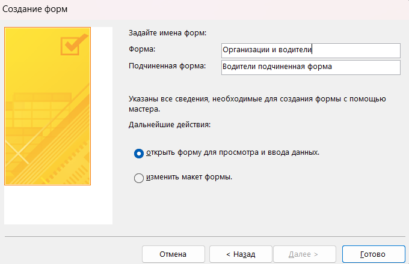
11. У нас создается подчиненная форма, которую мы можем редактировать, размещать элементы и просматривать данные, которые связаны между собой.
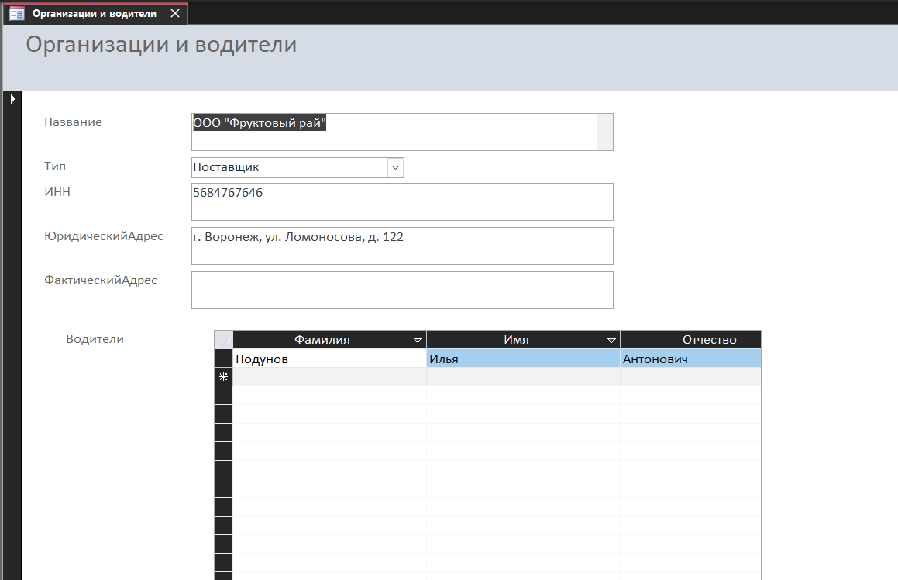
12. Перейдем в конструктор форм формы «Организации и водители» и поменяем расположение элементов, а также добавим кнопки «Предыдущая запись» и «Следующая запись»
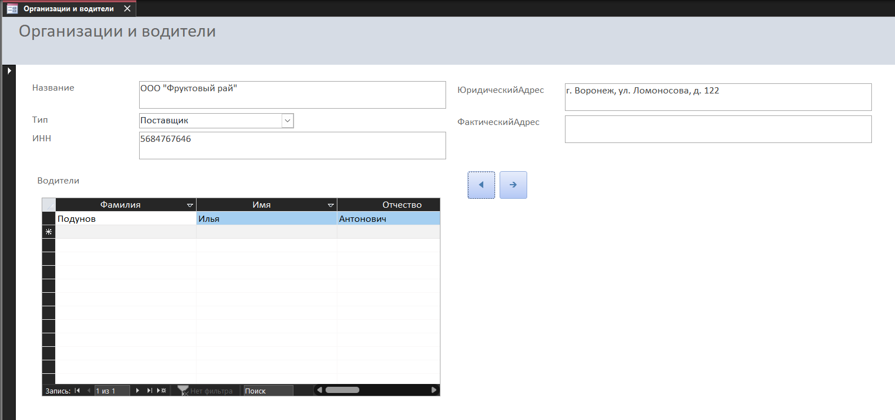
13. Подчиненную форму можно создать без «Мастер форм». Переходим на вкладку «Создание» и выбираем пункт «Конструктор форм»
14. Справа у нас есть навигационная панель «Список полей». Нажимаем на кнопку «Показать все таблицы»
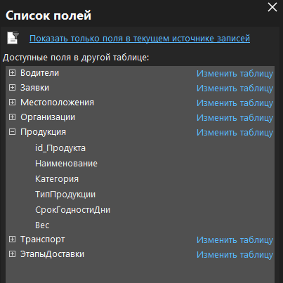
15. Выбираем таблицу «Продукция» перетаскиваем поля: Наименование, Категория, Тип продукции на форму
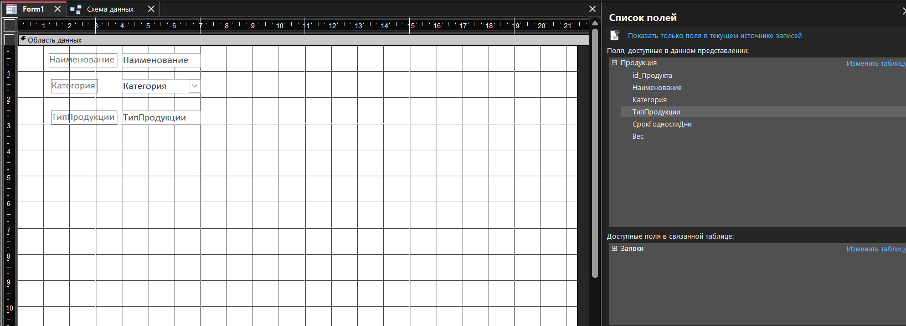
16. Теперь переходим на вкладку «Конструктор форм» и в элементах раскрываем список и размещаем на форму подчиненную форму/отчет
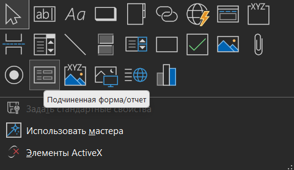
17. У нас открывается «Мастер подчиненных форм» и выбираем пункт «Имеющиеся таблицы и запросы» и нажимаем кнопку «Далее»
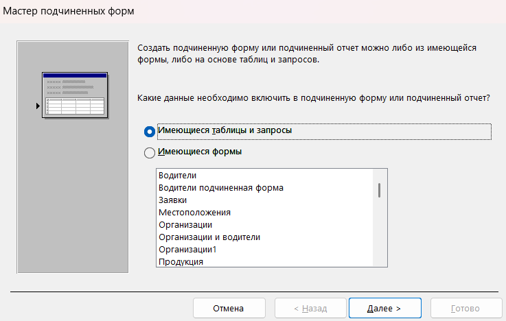
18. Теперь мы из выпадающего списка выбираем таблицу «Заявки» и выбираем поля, которые изображены на рисунке ниже и нажимаем на кнопку «Далее».
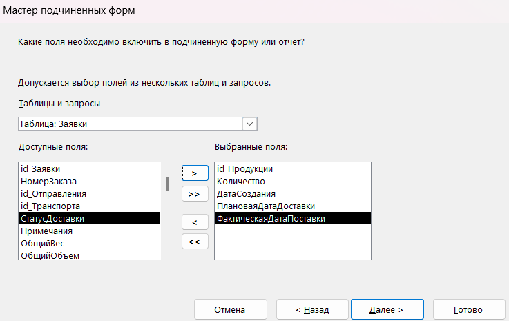
19. Открывается новое окно, где мы выбираем «Самостоятельное определение»
20. Выбираем поля формы и подчиненной формы, по которой мы будем менять данные при изменении поля, которым мы выбрали первым, нажимаем на кнопку «Далее» и задаем имя для формы.
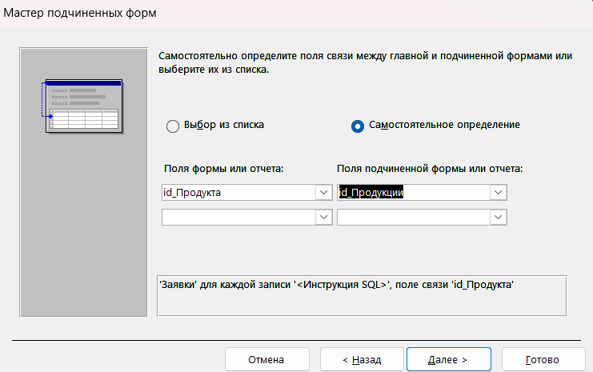
21. В итоге должна получиться такая форма, запустите форму в режиме формы.
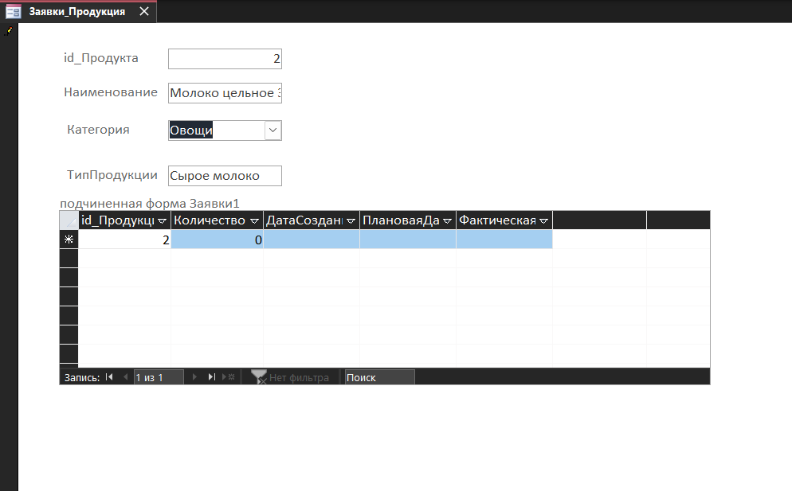
22. Сохраните и закройте проект